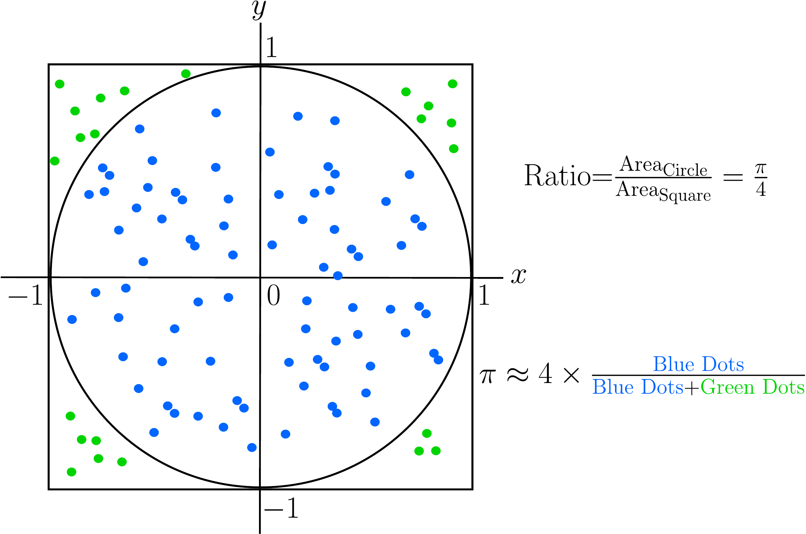
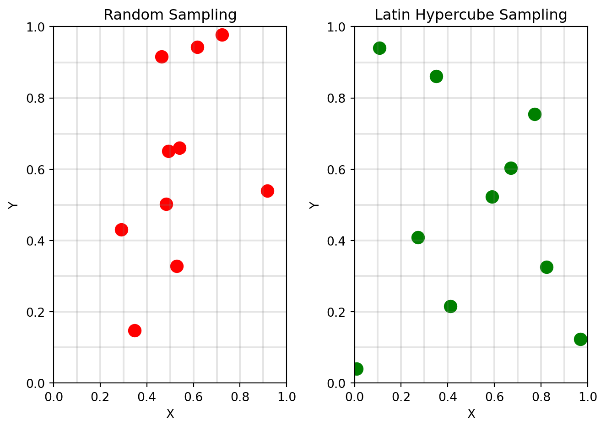
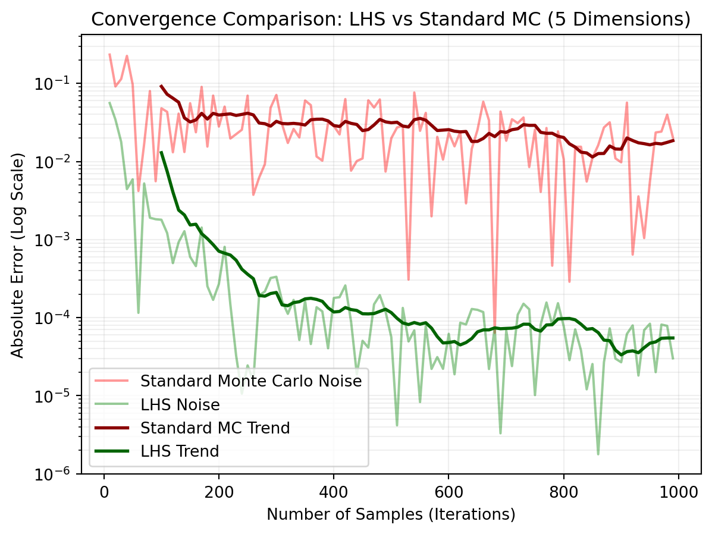
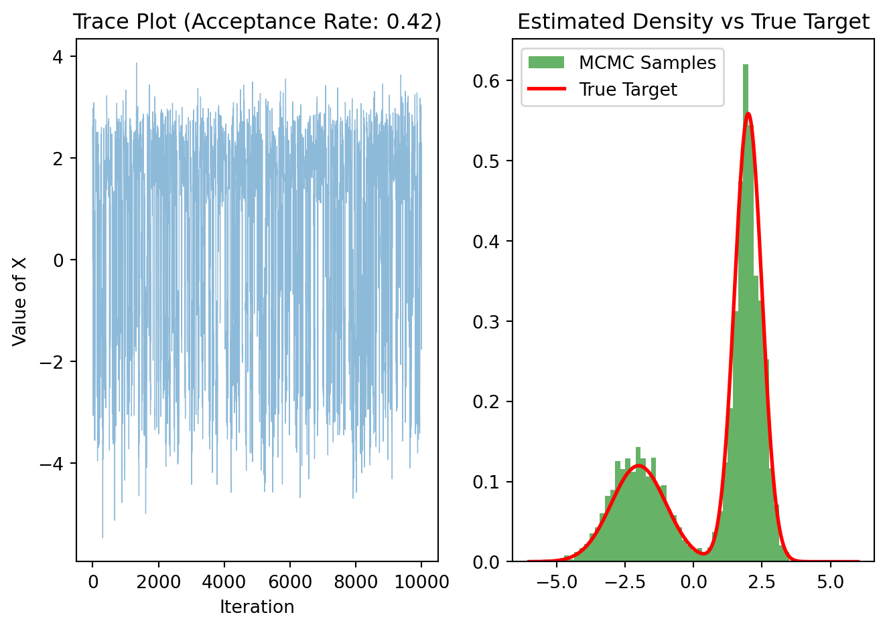

We call Monte-Carlo (MC) simulation methods to a broad class of computational methods used to approximate solutions to complex problems which can’t often be obtained by traditional analytical methods. The main idea of MC methods is to repeatedly sample randomly from pre-specified probability distributions to obtain numerical results that can be used to approximate the problem or phenomenon of interest.
Usually, each MC method comprises the following steps:
Define a model: The first step is to define a mathematical model of the phenomenon of interest, for instance stock prices, project duration, interest rates, etc.
Assign probability distributions: For any of the inputs defined in the mathematical model, we assign a probability distribution to each of them. These distributions can take any particular form which may be suited to the problem at hand (normal, exponential, Poisson, etc) and represent the range of possible values and their likelihood.
Simulate and aggregate: We run simulations of the model for large sample sizes and record the results for each run.
The final result is a distribution of possible outcomes and the probability of each outcome occurring, which provides a clear picture of the risk and potential variability inherent in the system.
The Monte Carlo method was developed in the 1940s by scientists working on the Manhattan Project, including Stanislaw Ulam and John von Neumann. The method was named after the Monte Carlo Casino in Monaco, reflecting the element of chance central to the technique. Initially used to solve problems in nuclear physics, the method has since been widely adopted across various fields, including finance, engineering, and computer science, due to its versatility and effectiveness in solving complex probabilistic problems.
3.1.1 The intuition behind Monte-Carlo simulation
Imagine that you want to know the probability of a particular outcome in a complex system with many uncertain variables that possibly interact in complicated ways. For instance, what is the probability that a new product launch will be successful, given uncertain factors like manufacturing costs, consumer demand and competitor pricing?
Instead of defining a mathematical equation to calculate that specific probability, we just simulate the event a large number of times (which can be thousands or even millions). Think of it like running an experiment for a number of times, the only difference being that in MC simulation the experiments are not physical but virtual. Therefore, the element of chance and repeated trials is central to MC simulation, and hence its connection to casinos and related games like the roulette wheel.
By running experiments a repeated number of times, we build representative samples that we can use to aggregate and calculate probabilities and confidence intervals. For instance, in our example if it turns out that 20% of the simulations result in success, we can confidently say that the probability of achieving that goal is 20%.
Example: Estimating the value of \(\pi\)
Let’s look at an example where we use MC simulation to approximate the value of the constant \(\pi\), which is depicted in Figure 3.1. Imagine you are throwing darts into this figure. When a dart hits the inside of the circle, we color it blue. Otherwise, we color it green. From basic arithmetic, we know that the ratio between the area of the circle (which is \(\pi r^2=\pi\) because \(r=1\)) and the area of the square (a \(2\times 2\) square with area 4) is \(\pi/4\). This means that if we had an approximation for these two areas, we could also approximate the value of \(\pi\) by dividing the circle’s area by the square’s area and multiplying by 4.
As you start throwing darts and counting which darts hit the inside and which ones the outside, you can estimate the ratio between the areas by just counting the number of blue dots and dividing by the total number of dots. However, for this to work, we need to assume that you are very bad at darts: concretely, that your darts will be uniformly distributed inside of the square. Under this conditions, if you continue throwing more and more darts and count accordingly, your approximation for \(\pi\) will get better and better. That’s MC simulation in a nutshell!

Figure 3.1: Example of Monte-Carlo simulation to calculate \(\pi\).
In this code, we make use of the modeling fact that points \((x,y)\) inside of the circle satisfy \(x^2+y^2\le 1\).
3.1.2 Limitations
Albeit powerful, MC simulation has a number of limitations that need to be taken into account.
Variance: Since MC is an inherently probabilistic method, the estimates have a degree of statistical uncertainty. Therefore different simulation runs will typically produce different estimates.
Slow convergence: In order to reduce this variance, the number \(N\) of iterations (samples) has to be dramatically increased. In general, the standard error decreases like \(1/\sqrt{N}\). So to halve the error, it’s not enough to double the number of samples, but it needs to be four times larger.
Random number generators: Here the quality of the PRNG used (see Chapter 2) plays a critical role. The used generator has to produce samples which are as random and independent as possible or otherwise MC won’t work.
In the next sections, we will uncover the foundations of MC simulation. First we will explore the core concepts and mathematical foundations behind it. After that, we will study classical MC techniques and how to calculate confidence intervals for their outputs. We will conclude this chapter with Markov Chain Monte Carlo (MCMC), one essential technique widely used in machine learning.
3.2 Core Concepts
The core idea of MC simulation is to leverage the Law of Large Numbers to approximate complex quantities: the average of a random variable over a large number of samples will converge to its expected value. This allows us to approximate quantities that are difficult or impossible to compute analytically by simulating random samples and calculating their average.
Mathematically, the goal of MC simulation is to estimate the expected value of a function of a random variable \(E[g(X)]\). The true expected value is defined by the integral:
Instead of solving this (often intractable) integral analytically, the MC method provides an approximation:
Sampling: We start by generating \(N\) independent and identically distributed (iid) random samples \(X_1, X_2, \dots, X_N\) from the probability distribution of \(X\) (using any of the methods seen in Chapter 2).
Evaluation: We now evaluate the target function \(g\) on each of the samples: \(g(X_1),g(X_2),\dots,g(X_N)\).
Estimation: The MC estimate \(\hat{E}[g(X)]\) is calculated as the sample average:
We call \(\hat{E}[g(X)]\) the Monte Carlo estimator. Note that we can approximate any integral with MC simulation using a simple trick. Assume we want to calculate the following integral:
\[
I=\int_a^b h(x) dx
\]
We can reframe this integral as the expectation of a uniform random variable in the interval \([a,b]\). Such a random variable has a pdf \(f(x)=1/(b-a)\). Now we have:
Recall that an estimator \(\hat{\theta}\) of a parameter \(\theta\) is said to be unbiased iff its expected value is equals to its true value \(E[\hat{\theta}]=\theta\). The MC estimator is an unbiased estimator of the expected value of a function of a random variable:
By the law of large numbers, we know that \(\hat{E}[g(X)]\) converges in probability to \(E[g(X)]\). Additionally, by the Central Limit Theorem (CLT), the standard error is proportional to \(1/\sqrt{N}\).
where \(\sigma\) is the standard deviation of \(g(X)\), which explains the slow convergence in general of MC simulation.
3.2.2 The Law of Large Numbers
The correctness guarantee for MC simulation comes from the law of large numbers, as mentioned before. We now give a more formal justification of why MC simulation does indeed arrive at the correct answer.
Let \(X_1,X_2,\dots,X_n\) be a sequence of iid random variables, and let \(\mu=E[X]\) denote the true mean of the distribution of the \(X_i\). We calculate the sample average of the sequence as:
\[
\bar{X}_n=\frac{X_1+X_2+\dots+X_n}{n}
\]
The law of large numbers states in its strong version that
That is, in the limit \(n\rightarrow\infty\), the probability of the limit converging to the true mean \(\mu\) is equals to 1. In our case, the true expectation \(\mu\) corresponds to the quantity of interest that we wish to calculate, and the random variables \(X_i\) correspond to one iteration of the simulation. The sample average \(\hat{X}_n\) represents then our current estimate of the true value \(\mu\).
We can model the simulation using the following probabilistic model. We can imagine each realization \(X_i\) to be the true value \(\mu\) perturbed by a random noise term \(\epsilon_i\) with \(E[\epsilon_i]=0\): \(X_i=\mu+\epsilon_i\). Now we average over \(n\) realizations:
But because the noise terms cancel out over time, we have \(\frac{1}{n}\sum \epsilon_i\rightarrow 0\) as \(n\rightarrow\infty\), and we end up in the limit with \(\bar{X}_n \approx \mu\).
Note that the independece assumption of the \(X_i\) is critical, since otherwise the error terms would compound rather than cancel out. This is the reason why only high-quality PRNG are used with MC simulation.
3.2.3 Confidence intervals
In order to quantify the uncertainty given by a MC estimate, confidence intevals represent an appropriate tool. For the calculation, we rely on the Central Limit Theorem already mentioned above. By this theorem, we know that the distribution of the sample mean tends towards a normal distribution when the number of iterations becomes large. Formally:
\[
\sqrt{n}(\bar{X}_n-\mu)\sim N(0,\sigma^2)
\]
Where \(\operatorname{Var}(X_i)=\sigma^2\). The consequence is that we can use \(Z\)-values of the standard normal distribution to calculate the confidence intervals:
where \(z_{\alpha/2}\) represents the \(\alpha/2\)-level quantile of the standard normal distribution. As an example, consider the following implementation for the estimate of \(\pi\) using Python code:
import numpy as npimport scipy.stats as statsdef monte_carlo_with_ci(num_iterations): x = np.random.uniform(0, 1, num_iterations) y = np.random.uniform(0, 1, num_iterations) inside_circle = (x**2+ y**2) <=1 values = inside_circle *4.0 mean_estimate = np.mean(values) std_dev = np.std(values, ddof=1) # ddof=1 for sample standard deviation standard_error = std_dev / np.sqrt(num_iterations)# 4. Calculate 95% Confidence Interval# z-score for 95% is 1.96, or strictly: stats.norm.ppf(0.025) z_score = stats.norm.ppf(0.025) margin_of_error = z_score * standard_error lower_bound = mean_estimate + margin_of_error upper_bound = mean_estimate - margin_of_errorreturn mean_estimate, lower_bound, upper_bound# Runmu, lower, upper = monte_carlo_with_ci(10000)print(f"Estimate: {mu:.4f}")print(f"95% CI: [{lower:.4f}, {upper:.4f}]")
Estimate: 3.1548
95% CI: [3.1228, 3.1868]
3.3 Variance Reduction Techniques
Until now, we have considered situations where sampling the probability space is effective. For instance, in the \(\pi\) calculation example, we are sampling points \((x,y)\) from a well-defined 2-dimensional space. By sampling a large number of points we expect our estimate to converge to the true value as the number of samples tends to infinity. However, what happens when we need to sample from a much higher dimensional space? For instance, sampling 100 numbers in a one-dimensional space might be enough for a good estimation. In a \(2D\) space, we would need to sample \(100\times 100=10^4\) points to reach a similar coverage, which would be still doable. However, what if our sampling space has 10 dimensions? That would amount to sampling \((100)^{10}\) points! This is called the curse of dimensionality and is one of the central problems in practical, high-dimensional problems.
One of the main advantages of MC simulation is that the error depends primarily on the number of samples and the variance of the simulation, and not on the dimension of the problem (see Equation 3.4). The problem is that the square root in the denominator forces us to increase the number of samples quadratically to achieve a specific error level. For example, if a simulation takes 1h to run, making it 10 times more accurate would take not 10, but 100 hours (more than 4 days).
However, there is another knob in Equation 3.4 that we can use: the standard deviation\(\sigma\). If we manage to reduce this standard deviation (or equivalently, the variance) of the simulation, we can increase the accuracy of the simulation as well. We will now see some methods for reducing the variance effectively in MC simulation: antithetic variates, control variates, importance sampling and stratified sampling.
3.3.1 Antithetic variates
Imagine the draw a large value for a random variable \(X_i\) during our simulation (large compared to the true mean \(\mu\)). Automatically, this value will increase the sample variance significantly. One simple way of compensating for this large value is to generate a “mirror” value that makes the large value cancel out. This is the main idea of the antithetic variates method. For instance, if we sample a random variable \(U\) in \([0,1]\), we do include also the value \(1-U\) in our sample. Therefore, instead of sampling \(n\) times independently, we sample \(n/2\) pairs \((U, 1-U)\). This typically already reduces the variance by a significant margin, improving the effectiveness of the MC simulation.
3.3.2 Control variates
Another highly effective method for reducing the variance is to use control variates. The main intuition behind this method is the following: imagine that you want to weigh an object \(Y\), however the scale has unknown accuracy. Let’s say we put it on the scale and it shows 10.5 kg. Now we have another object \(X\) for which we know, for sure, that it weighs exactly 10 kg. After putting it on the scale, we get a measurement of 10.2 kg. This means that the scale is off by 0.2 kg, so we can now correct our previous measurement and correctly conclude that \(Y\) weighs 10.3 kg.
In our case, we want to estimate \(E[Y]\) using MC simulation, for which there is no analytical solution. However, there is a control \(X\) for which we can calculate \(E[X]\) exactly and is highly correlated with \(Y\). Then, we can define a corrected estimator as:
\[
Y_{cv}=Y-c(X-E[X])
\tag{3.6}\]
with a specific value for the constant \(c\). Note that this estimator is unbiased:
\[
E[Y_{cv}]=E[Y]-c(E[X]-E[X])=E[Y]
\]
We are interested in minimizing the variance of this estimator, which is
where \(\rho_{xy}\) is the correlation coefficient between \(X\) and \(Y\). Since we want this ratio to get as close to 0 as possible, we have to choose \(X\) and \(Y\) so that \(\rho_{xy}\) is as close to 1 as possible.
Let’s solve an example to illustrate this technique. Assume that we want to estimate the value of the following integral:
\[
I=\int_0^1 e^{x^2} dx
\]
which is analytically untractable. However, there is an obvious proxy \((1+x^2)\), which represents the first two terms of the Taylor expansion of \(e^{x^2}\) around 0. We can calculate the integral for the control function easily:
As can be seen, the variance reduction achieved by the control variates method is in this case around 60x, which means that running 10,000 iterations using the control variates method is as good as running classical MC with 600,000 iterations.
3.3.3 Importance sampling
The next method is used in cases where the region of interest in the sampling space is very small, i.e. the events we try to simulate are very rare. Imagine we want to estimate the probability for a market crash. If we simulate the market for 1,000,000 times, we might still miss all crash events (e.g. if the market crash is considered to be a five-sigma event, its probability amounts to about 1 in 3.5 million). Therefore, standard MC would come up with a probability of 0, which is incorrect.
Instead of that, we sample from a probability distribution where market crashes are common. The good news is that now, we will have plenty of points to work with. However, by doing this we introduce a significant bias in the simulation, so our result will not be correct. The trick used by importance sampling is to “un-bias” the simulation by assigning a weight to each sample which is basically proportional to its likelihood. Samples which are more likely according to the original distribution will get a higher weight, whereas rare samples will be assigned a low weight.
More formally, we want to calculate the expectation of a function of a random variable \(f(x)\) under a probability distribution characterized by its pdf \(p(x)\).
\[
E_p[f(x)]=\int f(x)p(x)dx
\]
We now introduce a proposal distribution\(q(x)\), which is biased towards the rare events, by multiplying and dividing by it:
Note that our samples now come from \(q(x)\) instead of \(p(x)\) (because we sample from the biased distribution). Let’s now consider as an example a five-sigma event under a standard normal distribution governed by the probability \(P(X>5)\), where the true probability is about \(2.87\times 10^{-7}\). In the real world, the true probability distribution is \(N(0,1)\). Now we can sample from a biased distribution by moving the mean: \(N(5,1)\). In this distribution, events \(X>5\) happen roughly 50% of the time.
In this code, we compare the probability estimates and the variances obtained by standard MC and importance sampling.
N =10000# Only 10,000 samples (Small for a rare event!)target =5naive_p, naive_var, is_p, is_var = importance_sampling_demo(N, target)true_p =1- stats.norm.cdf(target) # Analytical solutionprint(f"Target: P(X > {target})")print(f"True Probability: {true_p:.10f}")print(f"Naive MC Estimate: {naive_p:.10f}")print(f"Naive Variance: {naive_var:.10f} (Likely zero if no hits occurred)")print(f"Imp. Samp Estimate:{is_p:.10f}")print(f"Imp. Samp Variance:{is_var:.20f}")# Check the ratio of variance reduction (avoid div by zero)if naive_var ==0:print("Naive method failed completely (0 hits). Importance Sampling is infinitely better here.")else:print(f"Variance Reduction Factor: {naive_var / is_var:.1f}x")
Target: P(X > 5)
True Probability: 0.0000002867
Naive MC Estimate: 0.0000000000
Naive Variance: 0.0000000000 (Likely zero if no hits occurred)
Imp. Samp Estimate:0.0000002921
Imp. Samp Variance:0.00000000000000004786
Naive method failed completely (0 hits). Importance Sampling is infinitely better here.
As can be seen, the estimate obtained by importance sampling is quite close to the true probability. With only 10,000 iterations, standard MC fails to sample a single extreme event, and therefore both the estimate and the variance are 0.
How to choose a good \(q(x)\)
We have seen that, in general, we should choose \(q(x)\) so that it is biased towards regions where the events of interest are more common. Concretely this means that \(q(x)\) should have high density where \(|f(x)|p(x)\) is also high, since this will significantly steer sampling towards the “important” region and reduce the variance. On the other side, if \(q(x)\) is zero in regions where \(p(x)\) is not, we might stop sampling in regions that matter. In this case, the answer will definitely be biased. As a rule of thumb, the tails of \(q(x)\) need to be heavier than those of \(p(x)\), since we do not want \(q(x)\) to decrease faster than \(p(x)\).
3.3.4 Stratified sampling
Let’s assume we want to integrate a monotonic function (that is, a function that either always increases or always decreases). Think e.g. about \(f(x)=e^x\) in \([0,1]\). If we start sampling random numbers, we might get trapped either in the low or the high region of the function. This might well happen because PRNM might accidentally “cluster” samples in a specific region. Alas, that would be bad, because it would significantly bias our estimate. In this case, we need to make sure that we sample equally well from all regions. This is the main idea of stratified sampling.
The mathematical trick now is to divide the sampling space into disjoint strata, which represent separate regions that cover the whole space. Depending on the form of the target function, the strata might be different in size. However, if possible, choosing strata of equal size might simplify the calculations.
Let’s denote by \(H\) the number of strata and \(p_h\) the probability that a random sample falls into stratum \(h\). We denote by \(S\) the random variable that represents the index of the stratum. Therefore, \(p_h = P(S=h)\) and \(\sum p_h = 1\). Each stratum has its own mean \(\mu_h=E[Y|S=h]\) and variance \(\sigma_h^2=\operatorname{Var}(Y|S=h)\). The total expected value that we are trying to estimate with stratified MC becomes then:
\[
\mu=E[Y]=\sum_{h=1}^H p_h\mu_h
\]
In order to calculate the variance, we use the law of total variance to decompose it into:
In this decomposition, the first term on the right-hand side \(E[\operatorname{Var}(Y|S)]\) represents the mean variance of the strata, or the variation within strata. The second term \(\operatorname{Var}(E[Y|S])\) represents the variance of the mean values of the strata, which can be seen as a measure of the variation between strata.
Let’s now compare the variance of the stratified estimator compared to standard MC. Recall that for the standard MC estimator \(\hat{Y}_{MC}=\frac{1}{n}\sum f(x_i)\):
For the stratified MC estimator, we have the sample means of each stratum \(\hat{\mu}_h\), and we calculate \(\hat{Y}_{SE} = \frac{1}{n} \sum p_h\hat{\mu}_h\). The variance then becomes the sum of the variances, since the covariance between strata is 0:
And since \(\sigma_B^2 \ge 0\), we have our variance reduction \(\operatorname{Var}(\hat{Y}_{SE})\le \operatorname{Var}(\hat{Y}_{MC})\).
In summary, stratified sampling using proportional strata is always equal to or better than standard sampling because it eliminates the variance caused by the variability in sampling proportions across strata with different means.
Example
As an example, let’s integrate \(f(x)=e^x\) in the interval \([0,1]\). For this, we will define \(H\) equally-spaced strata in this interval.
We now run the experiment multiple times to determine the variance of the method. Because stratified samples are not iid, we need to repeat the experiment to get an estimate of its variance:
As can be seen, the variance could be dramatically reduced and, comparing the plots, we can see why: stratified sampling obtains a much more balance distribution for the sampled points than standard MC, where the random numbers tend to clump and form gaps.
3.3.5 Latin Hypercube Sampling
The last variance reduction technique we will see is a modification of stratified sampling that comes to the rescue in high-dimensional problems: Latin Hypercube Sampling. The problem of stratified sampling in higher dimensions is that the number of strata required grows exponentially with the dimension of the problem. For instance, if we wish to stratify each dimension using 100 bins, the number of strata becomes already prohibitive for e.g. 10 dimensions (\(100^{10}\) points would be needed).
Latin hypercube sampling is a clever way to organize the sampling space. The main idea is to stratify every single dimension simultaneously, but without filling the entire grid. Our goal is to sample \(n\) points such that, when looking from the perspective of any single dimension, there is always exactly one point in every bin. To visualize this, imagine a chess board with 8 rooks, and try to place each rook so that no rook can attack another.
TODO: visualization
If we now look at each dimension in isolation, there is always exactly one rook in each row/column. The advantage is that samples are now spread out maximally across the range of each variable individually, thus effectively reducing the variance in higher dimensions.
The method to build a latin hypercube for sampling \(n\) points is as follows:
Divide the range \([0,1]\) into \(n\) equal intervals.
For each dimension, generate a random permutation of the indices \([0,1,\dots,N-1]\).
Based on these permutations, we assign the intervals to the samples.
To avoid each sample to be exactly at the center, we add a random jitter to each point.
In two dimensions, this would look like the following:
N =10# 10 samplesD =2# 2 dimensions# Generate Datarandom_samples = np.random.uniform(0, 1, (N, D))lhs_samples = latin_hypercube_sampling(N, D)# Plot 1: Random Samplingplt.subplot(1, 2, 1)plt.scatter(random_samples[:, 0], random_samples[:, 1], color='red', s=100)plt.title("Random Sampling")plt.xlim(0, 1); plt.ylim(0, 1)# Draw grid to show binsfor i inrange(1, N): plt.axvline(i/N, color='gray', alpha=0.2) plt.axhline(i/N, color='gray', alpha=0.2)plt.xlabel("X")plt.ylabel("Y")# Plot 2: Latin Hypercube Samplingplt.subplot(1, 2, 2)plt.scatter(lhs_samples[:, 0], lhs_samples[:, 1], color='green', s=100)plt.title("Latin Hypercube Sampling")plt.xlim(0, 1); plt.ylim(0, 1)# Draw grid to show binsfor i inrange(1, N): plt.axvline(i/N, color='gray', alpha=0.2) plt.axhline(i/N, color='gray', alpha=0.2)plt.xlabel("X")plt.ylabel("Y")plt.tight_layout()plt.show()

As can be seen, the points are clearly better organized than in the random sampling case. The jitter adds some variability in order not always to fall in the center of each bin.
To conclude, we demonstrate how to calculate a high-dimensional integral using latin hypercube sampling. Let’s calculate the integral of the following 5-dimensional function:
\[
f(\mathbf{x})=\sum_{i=1}^5 x_i^2
\]
in the interval \([-1,1]\) for each dimension \(x_i\). For this, we will use the standard latin hypersquare sampling implementation of the SciPy library scipy.stats.qmc.
Note that the LatinHypercube sampler outputs samples in the interval \([0,1]\) which need so be scaled to \([-1,1]\) using the scaler qmc.scale. Let’s now visualize the results:
plt.semilogy(sample_sizes, errors_mc, color='red', alpha=0.4, label='Standard Monte Carlo Noise')plt.semilogy(sample_sizes, errors_lhs, color='green', alpha=0.4, label='LHS Noise')# Add trendlines (moving average) to make it clearerdef moving_average(a, n=10) : ret = np.cumsum(a, dtype=float) ret[n:] = ret[n:] - ret[:-n]return ret[n -1:] / nplt.semilogy(sample_sizes[9:], moving_average(errors_mc), color='darkred', linewidth=2, label='Standard MC Trend')plt.semilogy(sample_sizes[9:], moving_average(errors_lhs), color='darkgreen', linewidth=2, label='LHS Trend')plt.title(f"Convergence Comparison: LHS vs Standard MC ({dim} Dimensions)")plt.xlabel("Number of Samples (Iterations)")plt.ylabel("Absolute Error (Log Scale)")plt.legend()plt.grid(True, which="both", ls="-", alpha=0.2)plt.show()# Final comparison for the largest Nprint(f"Final Error (N={sample_sizes[-1]}):")print(f"Standard MC Error: {errors_mc[-1]:.6f}")print(f"LHS Error: {errors_lhs[-1]:.6f}")print(f"Improvement Factor: {errors_mc[-1]/errors_lhs[-1]:.1f}x more accurate")

Final Error (N=990):
Standard MC Error: 0.013951
LHS Error: 0.000022
Improvement Factor: 633.2x more accurate
In this plot, we have used a logarithmic scale on the \(y\)-axis to better see small errors. Additionally, a trend line is provided which is the moving average of the errors. As can be seen, the LHS errors are clearly lower than the standard MC errors and the method is about 100x more accurate than standard MC using the same number of samples.
3.3.6 Summary of Variance Reduction Techniques
Variance reduction techniques are essential in Monte Carlo simulations to improve the accuracy of estimates without requiring a significant increase in the number of samples. Below is a summary of the techniques discussed and when to use each:
Antithetic Variates:
When to use: Use when the random variables are symmetric, and you can generate negatively correlated pairs (e.g., sampling \(U\) and \(1-U\)).
Advantage: Reduces variance by ensuring that large deviations in one direction are counterbalanced by deviations in the opposite direction.
Control Variates:
When to use: Use when you have a control variable that is highly correlated with the target variable and whose expected value is known.
Advantage: Significantly reduces variance by leveraging the known expected value of the control variable to correct the estimate.
Importance Sampling:
When to use: Use when the region of interest in the sampling space is rare or has low probability (e.g., rare events like market crashes).
Advantage: Focuses sampling on the important regions of the space, improving efficiency and reducing variance for rare events.
Stratified Sampling:
When to use: Use when the sampling space can be divided into distinct strata, and you want to ensure proportional representation from each stratum.
Advantage: Reduces variance by eliminating variability caused by uneven sampling across strata.
Latin Hypercube Sampling (LHS):
When to use: Use in high-dimensional problems where stratified sampling becomes computationally expensive.
Advantage: Ensures that samples are evenly distributed across each dimension, reducing variance in high-dimensional spaces.
Each technique has its strengths and is suited for specific scenarios. By selecting the appropriate method, a significant variance reduction and improved efficiency of the MC simulation can be achieved.
3.4 Markov Chain Monte Carlo
Until now, all methods for standard Monte Carlo that we have seen so far rely explicitly on the However, in many practical scenarios, generating independent samples directly from the target distribution is either computationally expensive or infeasible. This is where Markov Chain Monte Carlo (MCMC) methods come into play. MCMC methods allow us to sample from complex distributions by constructing a Markov chain whose stationary distribution matches the target distribution.
The key idea is to design a Markov chain that “explores” the target distribution efficiently, even if the samples are not independent. Over time, the chain converges to the target distribution, and we can use the samples generated to approximate expectations.
In the next sections, we will explore the foundations of MCMC, including the Metropolis-Hastings algorithm and Gibbs sampling, two of the most widely used MCMC techniques.
3.4.1 Motivation for MCMC
Imagine that we want to map the mountain peaks on a mountain range that is covered in thick fog. We have basically two options:
A helicopter drops thousands of hikers at completely random coordinates in a 100 km area. As a result, 99% of them land in the valleys or the ocean. Only a few luck out and land on a peak. This is the approach used by standard MC.
We drop only one hiker, which follows the following rule:
Pick a random direction and check the altitude of that spot.
If the new spot is higher, move there.
If it’s lower, move there only with a given probability.
The last approach encompasses the main idea of MCMC: If the hiker only moved up, they would get stuck on the very top of the first tiny hill they found (local maximum). By occasionally accepting downward steps, the hiker can traverse valleys to find the massive mountains on the other side. After 10,000 (simulation) steps, if we look at a map of where the hiker has been, the density of their footprints will perfectly match the elevation map of the mountain range.
Note that it’s not just that the mountain pikes are concentrated in a rather small volume: the main issue in this case is rather that it is
challenging to sample from the target distribution directly. MCMC methods provide a way to approximate the target distribution by constructing a Markov chain that explores the space iteratively. Over time, the chain converges to the desired distribution, allowing us to estimate expectations and probabilities effectively.
3.4.2 When do we apply MCMC?
As mentioned early, MCMC is particularly useful in scenarios where direct sampling from the target distribution is challenging or computationally expensive. Some common situations where MCMC is applied include:
High-dimensional distributions: When the target distribution exists in a high-dimensional space, direct sampling becomes infeasible due to the curse of dimensionality. We already mentioned similar situations for some variance reduction methods in Section 3.3.
Complex or unknown normalizing constants: In Bayesian inference, posterior distributions often involve a normalizing constant that is difficult to compute. That is a distribution of the form:
\[
p(x)=\frac{f(x)}{Z}
\]
where \(Z\) is a normalization constant required to make probabilities sum up to 1. In essence, \(Z\) represents the integral of \(f(x)\) over the entire domain. However this integral might be impossible to calculate. This is especially relevant in Bayesian inference when calculating the posterior distribution of a parameter of interest given the available data:
where the normalization constant \(p(D)\) is usually written as:
\[
p(D)=\int p(D|\theta)p(\theta)d\theta
\]
This integral is usually intractable, either because of the high dimensionality of \(\theta\) (think e.g. of neural network weights) or because there is no closed form solution. MCMC allows sampling without explicitly calculating this constant, as we will see shortly.
Non-standard distributions: When the target distribution does not have a closed-form expression or does not belong to a standard family of distributions.
Rare event probabilities: When estimating probabilities of rare events, MCMC can efficiently explore the regions of interest.
Integration over complex spaces: MCMC is used to approximate integrals in cases where the integrand is defined over a complex or irregular domain.
Applications of MCMC include cryptography (deciphering substitution ciphers), detecting gerrymandering in political science, protein folding in computational biology, Bayesian inference in machine learning, and epidemiology.
3.4.3 Foundations of MCMC
The main idea of MCMC is the following: we want to sample the target distribution using a Markov chain where the stationary distibution is itself the distribution we want to sample from. Let’s denote by \(\pi(x)\) our target distribution. The Markov chain we want to find is characterized by a transition kernel\(T(x'|x)\). The transition kernel is a generalization for the transition matrix \(\mathbf{P}\) that applies for both continuous and discrete-state Markov chains. In the discrete case, \(T(j|i)=P_{ij}\). In the continuous case, \(T(x'|x)\) is just the integral of the conditional pdf \(f(x'|x)\) over the appropriate domain.
Now we want to build our kernel in such a way that \(\pi(x)\) is the stationary distribution of the chain. This is expressed by:
\[
\pi(x')=\int T(x'|x) \pi(x) dx
\tag{3.10}\]
This means that when drawing a sample \(x\) from \(\pi(x)\), applying the transition rules of the chain also results in a point \(x'\) that is distributed according to \(\pi\). Therefore, once that the chain enters the target distribution, it will stay there forever. However, working directly with Equation 3.10 can be challenging, therefore in practice we work with a simpler equilibrium condition (which is stronger than mere stationarity):
\[
T(x|x')\pi(x')=T(x'|x)\pi(x)
\tag{3.11}\]
This means that the probability flow between any two points \(x,x'\) should remain equal. In summary, when this condition holds, then this implies Equation 3.10 and \(\pi\) becomes our stationary distribution as desired. However, we still haven’t any guarantees that the chain, indeed, will converge to \(\pi\). As soon as it does, it will stay there forever, but will it reach that point of no return? To answer this question affirmatively, we need to pose another condition and that is ergodicity. In essence, this boils down to the following two critical requirements:
The chain is irreducible: there must be a non-zero probability of reaching a state \(x\) from any other state \(x'\). This means that the chain cannot get trapped forever in an isolated environment.
The chain is aperiodic: it must not get stuck in a cycle (i.e. a fixed loop).
If these two requirements are met, the following theorem (Ergodic Theorem) applies: Let \(\{X_t\}\) be a Markov chain that is irreducible, aperiodic and has a stationary distribution \(\pi\). Then, for any starting point \(X_0\), we have:
That is, in the limit the time average of the chain equals the mean of the target distribution.
3.4.4 Metropolis-Hastings
We now focus on a specific algorithm for building a transition kernel \(T\) for a Markov chain that fulfills the equilibrium condition Equation 3.11 and the conditions for ergodicity. For this, a seminal approach is the Metropolis-Hastings algorithm. The main idea is to decompose the kernel \(T(x'|x)\) into two parts:
A proposal distribution \(q(x'|x)\), which is usually a distribution we know how to sample from (e.g. usually a Gaussian centered at the current state \(N(x, \sigma)\)).
An acceptance probability\(\alpha(x'|x)\) that expresses the probability that we accept the proposed move.
Because, in principle, this ratio is unbounded, we need to set a ceiling of 1 so that we get a valid probability. One of the main advantages of Equation 3.14 is that, since \(\pi\) appears both on the numerator and the denominator, any normalization constant \(Z\) appearing as \(\pi(x)=f(x)/Z\) cancels out, so we don’t need to estimate this constant anymore.
The algorithm itself involves the following steps:
Pick an arbitrary strating point \(x_0\).
For \(t=0\) to \(T\) (simulation length):
Sample a candidate \(x'\) from the proposal distribution \(x'\sim q(x'|x_t)\).
Calculate the acceptance probability \(\alpha\) according to Equation 3.14.
Generate a uniform random number \(u\) in the interval \([0,1]\).
If \(u\le \alpha\), accept: \(x_{t+1}=x'\).
Otherwise, reject: \(x_{t+1}=x_t\).
Why Metropolis-Hastings works
Let’s take a closer look at Equation 3.14, and why it satisfies Equation 3.11. We can divide the ratio into the following parts:
The likelihood ratio \(\pi(x')/\pi(x)\) measures how much better the new sampled point \(x'\) is in relation to the current one \(x\). When this ratio is greater than 1, this means that the new point has a higher probability density than the previous one, and we would normally accept.
The correction factor \(q(x|x')/q(x'|x)\) ensures that, in case the proposal is not symmetric, the simulation is not biased towards specific high-probability regions by correcting for the imbalance (i.e. \(q(x'|x)\) is very large).
Now let’s denote the combined ratio by \(r\), so \(\alpha=\min(1,r)\) and focus on the detailed balance condition (Equation 3.13), which states the the flow from \(x\rightarrow x'\) should be equal than the flow \(x'\rightarrow x\).
If \(r\ge 1\), we get \(\alpha(x'|x)=1\). Additionally, \(\alpha(x|x')\) is \(1/r\), which amounts to \(\pi(x)q(x'|x)/\pi(x')q(x|x')\). Substituting in Equation 3.13 we get:
If \(r<1\), we have that the minimum is less than 1, and therefore \(\alpha(x'|x)=\pi(x')q(x|x')/\pi(x)q(x'|x)\). For \(\alpha(x|x')\), we have \(1/r>1\) and therefore \(\alpha(x|x')=1\). Substituting in Equation 3.13 we get:
Let’s sample from a bimodal distribution which is a mixture of two Gaussians. Without MCMC, classical algorithms would frequently get stuck in one peak or the other. For instance, \(\pi(x)=0.3 N(-2,1) +
0.7 N(2,1)\).
N =10000start_x =0step_size =2.0samples, acc_rate = metropolis_hastings(N, start_x, step_size)plt.subplot(1, 2, 1)plt.plot(samples, alpha=0.5, lw=0.5)plt.title(f"Trace Plot (Acceptance Rate: {acc_rate:.2f})")plt.xlabel("Iteration")plt.ylabel("Value of X")# Histogram vs True Densityplt.subplot(1, 2, 2)# Histogram of MCMC samplesplt.hist(samples, bins=50, density=True, alpha=0.6, color='g', label='MCMC Samples')# True curvex_range = np.linspace(-6, 6, 1000)plt.plot(x_range, target_pdf(x_range), 'r-', lw=2, label='True Target')plt.title("Estimated Density vs True Target")plt.legend()plt.tight_layout()plt.show()

3.5 Chapter Summary
In this chapter, we have explored Monte Carlo simulation in detail, including its rationale and several variance reduction techniques to improve simulation accuracy. These techniques include antithetic variates, importance sampling, stratified sampling, and latin hypercube sampling. Additionally, we explored Markov Chain Monte Carlo as a way of simulating specially challenging probability distributions, and took a closer look at the Metropolis-Hastings algorithm as one special way of implementing MCMC.
3.6 Exercises
Prove that for the control variates variance reduction approach, the constant that minimizes the variance is indeed \(c^*=\operatorname{Cov}(X,Y)/\operatorname{Var(X)}\). Hint: Use calculus.
Consider the importance sampling variance reduction technique and let \(f(x)>0\) be strictly positive. Let the proposal distribution be defined as \(q^*(x)=f(x)p(x)/Z\), where \(Z\) is the normalization constant required to make \(q^*\) a probability distribution. Note that \(Z=\int f(x)p(x)dx\) is exactly the integral we are trying to estimate. Substitute this proposal distribution \(q^*\) into Equation 3.8 and explicitly calculate its variance. Explain why this choice of \(q^*\) is theoretically optimal.
Write a Python script that compares Standard Monte Carlo with stratified sampling for estimating the integral \(I=\int_0^1 \frac{1}{1+x}dx\), whose analytical solution is \(\operatorname{ln}(2)\approx 0.693147\). For stratified sampling, use 10 equally sized strata and print the “Variance Reduction Factor” (Variance of Standard / Variance of Stratified). Do the results align with the theoretical expected result?
Implement the Metropolis-Hastings method for sampling from a distribution proportional to the Gamma(3,1) distribution \(\pi(x)\propto x^2 e^{-x}\) for \(x>0\) and \(\pi(x)=0\) for \(x\le 0\). Plot a histogram of your samples against the theoretical curve (normalized) to visually verify convergence and calculate the empirical mean.